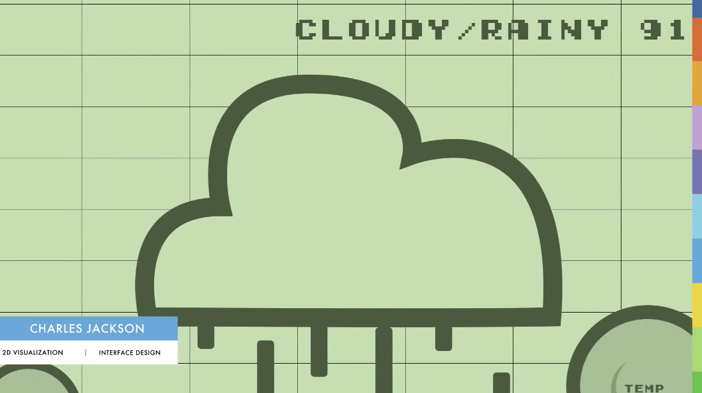
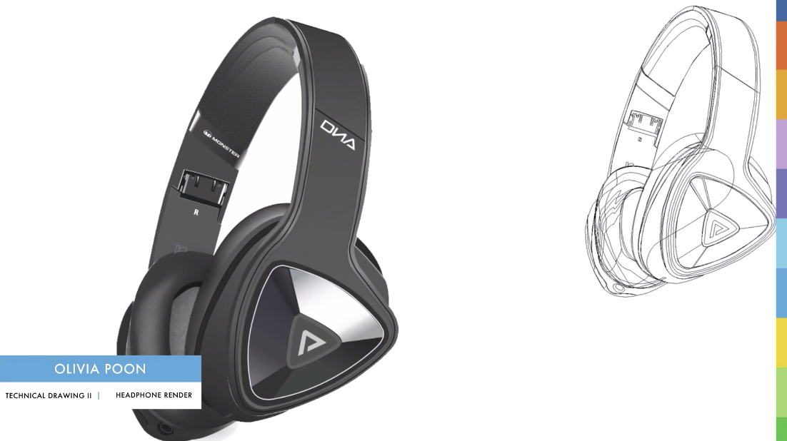
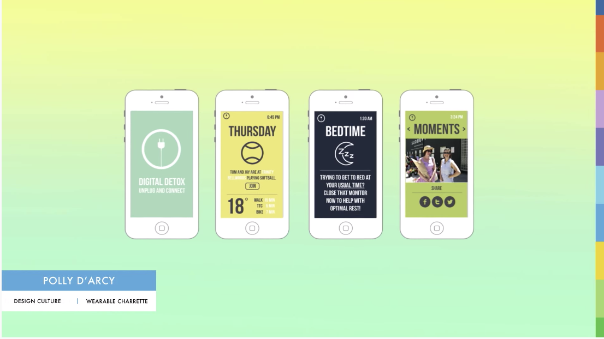
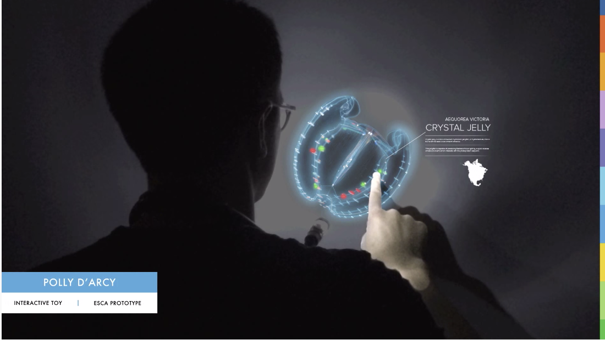

OVERVIEW
The Interaction Design and Development program at George Brown College's School of Design offers a scientific approach to use and functionality in our ever-growing digital world. We explore some of the hottest realms of interaction: virtual reality, augmented reality, immersive environments, and internet of things.
This is a front-end development program, which develops prototype experiences, not a graphic design program or a back-end development. We work in groups 25% of the time and teach you to think independently.
Upon completion, you will receive and Ontario College Advanced Diploma with a suitcase full of interdisciplinary skills.
LEARN
Our instructors are top-notch, industry-working people, with practical, real-world project experience. We teach a variety of up-to-date skills and strategies. As digital citizens, we are also interested in socio-technical needs/trends. Today's tech industry is constantly evolving--and so are we!
We value taking a hands-on approach to problem-solving and developing strategies that enhance meaning. Our user interface and user experience training equips you with the ability to create user-friendly and optimized digital interfaces.
Design Skills
Learn how to use the Adobe Creative Cloud Suite to visualise your potential. We go beyond visual aesthetics and dive into the Why.
Development Languages

Building your project is about more than just software! We teach you good coding practices and effective ways to prototype. Writing clean code is key to communicating with stakeholders, and most importantly, other humans!
PROJECTS
We focus on building strong portfolios. Students work on different projects throughout each semester. Collaboration and teamwork are essential skills we refine. Together, students ideate, prototype, build, and give feedback throught the design process. Concepts, visuals, and code all come into being!
2D Visualization
Technical Drawing
User Interface Design
User Experience Research
CAREER PATHS
Our Interaction Design and Development program can lead you to a wide variety of careers:
- Mobile Developer/Designer
- Web Developer/Designer
- Interaction/Multimedia Designer
- User Experience Designer
- User Interface Designer
- 3D Visualisation Artist
- Motion Designer
Placement:
There are optional placement oppurtunites available in your final semester.
OUR STUDENTS & ALUMNI
I came to GBC from working in the hospitality industry. I like the project-based nature of this program. Also, the instructors are super approachable and give personal feedback on your work!
I was tired of my job as a flight attendant. After looking for new future-proof career prospects, I stumbled upon GBC's exciting IDD program. The year-end show will allow me to showcase my portfolio work to prospestive employers and the public!
IDD at GBC prepared me for my first job as a junior front-end developer. I am able to articulate my passion for strong information architecture and user research. In addition, the hands-on coding experience helps me communicate with different teams.